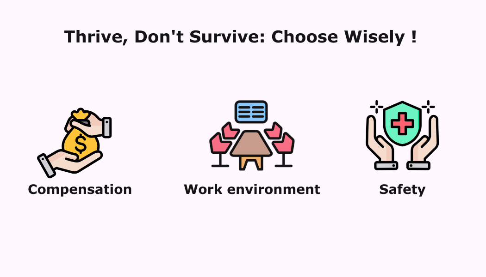
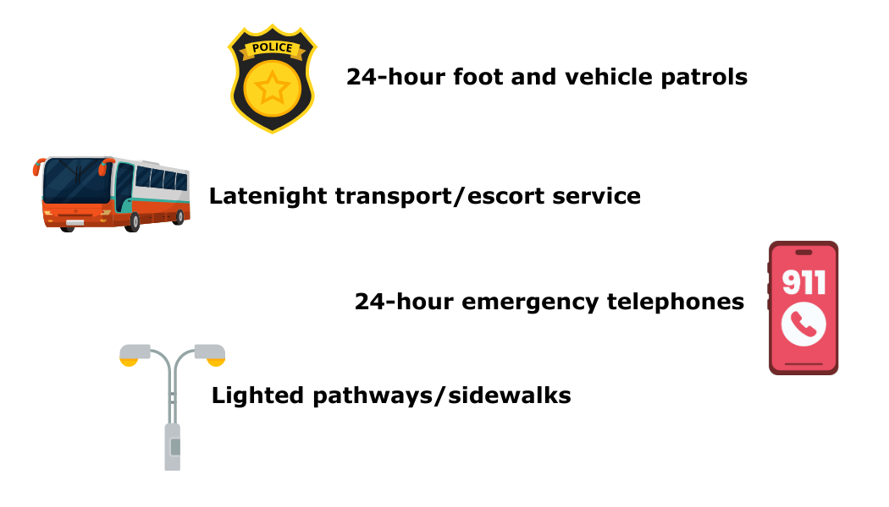

The place you spend a significant portion of your time working has a major impact on your overall well-being and professional fulfillment. A good workplace goes beyond just a paycheck; it fosters a positive environment that fuels your motivation, growth, and satisfaction.
Factors that determine a good workplace
Compensation
Compensation is crucial in determining a good workplace as it directly influences employee satisfaction, retention, and their ability to meet financial needs. Fair and competitive pay also reflects the organization’s recognition of employee value and contribution.
Work Environment
A good work environment offers the opportunity to contribute meaningfully to a prestigious university's mission, fostering a sense of purpose in your work.
1. Student Faculty ratio
Lower ratios ensure more individualized attention for students, allowing you to provide deeper learning experiences. Manageable class sizes free up your time for research, collaboration, and innovation for faculty.

2. Ranking
Top-ranked universities often have a strong reputation for research, which can attract funding opportunities and collaborations for faculty.

Safety
All four UMass campuses (Amherst, Boston, Dartmouth, Lowell) are said to have 24-hour foot and vehicle patrols, Late night transport/escort service, 24-hour emergency telephones, Lighted pathways/sidewalks.
